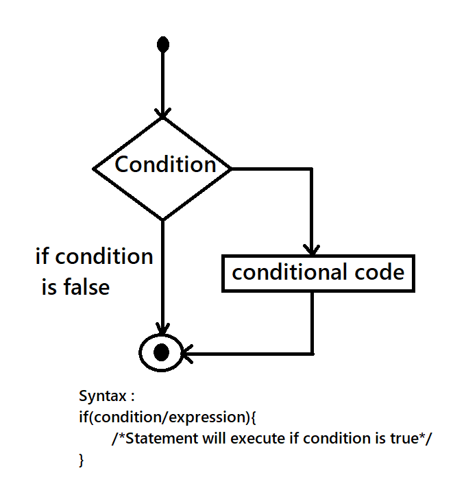

Branching decides what actions to take. Branching is so called because the program chooses to follow one branch or another. The Clanguage programs follows a sequential form of execution of statements. Many times it is required to alter the flow of sequence of instructions. C language provides statements that can alter the flow of a sequence of instructions. These statements are called as control statements. To jump from one part of the program to another, these statements help. The control transfer may be unconditional or conditional.
Branching Statement are of following categories:
Loops provide a way to repeat commands and control how many times they are repeated. C provides a number of looping ways
These statements transfer control to another part of the program. When we want to break any loop condition or to continue any loop with skipping any values then we use these statements. There are three types of jumps statements.
This is the simplest form of the branching statements takes an expression in parenthesis and a statement or block of statements if the expression is true then the same ki statements gets executed otherwise these statements are skipped. If the Condition/Expression evaluates to true, then the block of code inside the if statement will be executed.
An if statement can be followed by an optional else statement, which executes when the boolean expression is false.
It is Always legal in C programming to nest if else statement, which means you can use one if or else if statement inside another if or else if statement.
The expression following the keyword switch is any C expression that evaluates an integer or a char value. First, the expression following the keyword switch is evaluated. The value is then matched, one by one, against the constant values that follow the case statements. When a match is found, the program executes the statements following that case, and all subsequent case and default statements as well. If no match is found with any of the case statements, only the statements following the default are executed. A few examples show how this control structure works We can check the value of any expression in a switch. Thus the following switch statements are legal.
| Loop Type | Description |
|---|---|
| While Loop | Repeats a statement or group of statements while a given condition is true. It test the condition before executing loop body |
| for Loop | Execute a sequence of statements multiple times and abbreviates the code that manage the loop variable. |
| do While Loop | Like a while statement, except that it tests the condition at the end of loop body. |
| nested Loop | You can use one or more loop inside any other while, for or do while loop. |